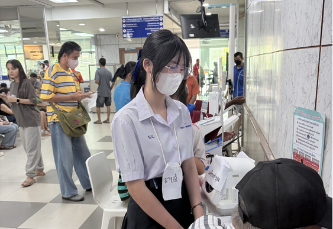
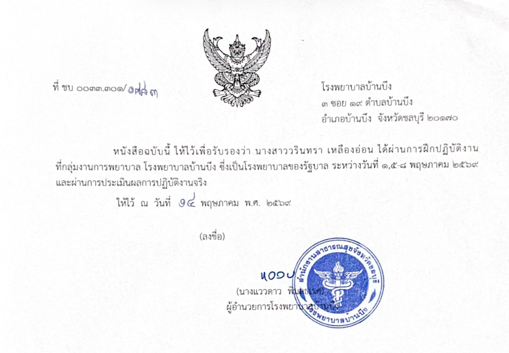
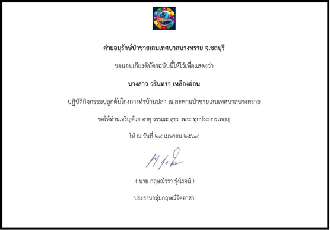
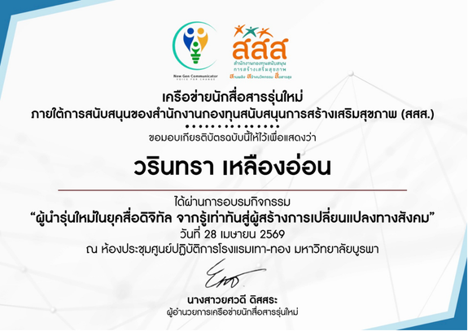
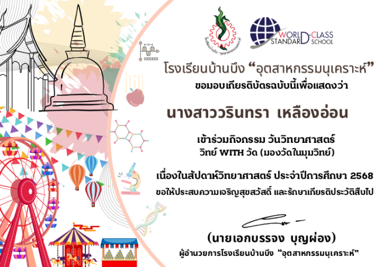
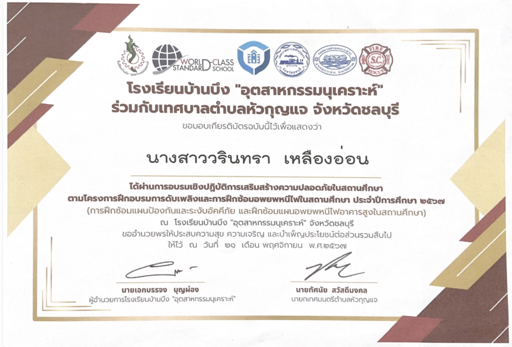
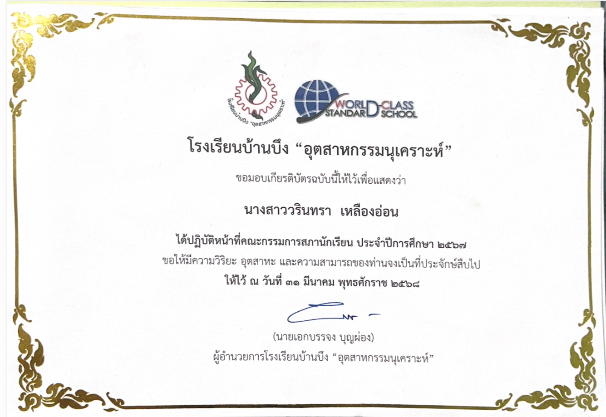

โรงเรียนบ้านบึง“อุตสาหกรรมนุเคราะห์”
โรงเรียนบ้านบึง“อุตสาหกรรมนุเคราะห์”
โรงเรียนบ้านบึง“อุตสาหกรรมนุเคราะห์”
โรงเรียนบ้านบึง“อุตสาหกรรมนุเคราะห์”
ผลงาน กิจกรรม และประสบการณ์ที่ได้เข้าร่วม


เข้าร่วมการอบรม "ระดมสมองคนรุ่นใหม่" ในการอบรมครั้งนี้ มีการเยี่ยมชมสถานที่ในวิทยาลัยเทคนิคชลบุรี จังหวัดชลบุรีและได้มีการรณรงค์ความคิดในหัวข้อ "worldclass standard school" ได้รับความรู้ ความกล้าแสดงออก และความสามัคคีในการทำกิจกรรมกลุ่ม


เสริมสร้างประสบการณ์และเป็นแนวทางในการประกอบอาชีพด้านทันตกรรม ที่ คลินิกทันตกรรมเอสซี ได้รับความรู้การพิมพ์ฟัน การเอ็กซเรย์ช่องปาก จำลองการเป็นหมอฟัน ผู้ช่วยหมอฟัน และผู้ที่มาทำฟัน

จิตอาสา เป็นผู้ช่วยวิทยากรกิจกรรม เกมต่อเลขสมการคณิตศาสตร์ที่โรงเรียน ได้รับรู้แนวคิดที่แตกต่าง สอนรุ่นน้องในการเล่น ฝึกการสื่อสาร ฝึกความอดทน และได้รับความสนุกสนาน ให้น้องๆ ไม่มองว่า ตัวเลขไม่ได้น่ากลัวแบบที่คิด


เข้าร่วมอบรมโครงการ เปิดโลกวิชาการ 2026 ได้รับความรู้ ได้ลงมือทำ ในการชำและหัวใจกบ ทำฟัน และได้ฝึกความสามัคคีในการสร้างสะพาน


ได้ฝึกประสบการณ์ที่โรงพยาบาลบ้านบึง เป็นเวลารวม 5 วัน 40 ชั่วโมง ได้รับความรู้ เห็นแผลอุบัติเหตุ เข้าห้องแลป นักฉายรังสี เทคนิคการแพทย์ เยี่ยมชมแผนกเภสัชจ่ายยา เข้าเวรเช้า วัดความดัน รอบเอว ซักถามประวัติผู้ป่วย ฝึกฝนการพูดจาและความกล้าแสดงออกได้ดีเยี่ยม
เกียรติบัตรที่ได้รับจากการเข้าร่วมกิจกรรมต่าง ๆ

เข้าร่วมปลูกป่าชายเลน ได้รับความรู้เรื่องป่าชายเลน และลงสถานที่จริง

เข้าร่วมการอบรม อุ่นใจไซเบอร์ ได้รับความรู้จากวิทยาการ

เข้าร่วมกิจกรรม สร้างบ้านปลาให้ป่าชายเลน ได้รับความรู้เรื่องป่าชายเลนมากขึ้น

เข้าร่วมการอบรมบุคคลรุ่นใหม่ ได้รับความรู้มากมาย

เข้าร่วมกิจกรรมวันวิทย์ ทั้งหมด 12ซุ้ม ได้รับความรู้และความสนุกมากมาย

อบรมดับเพลิงและการฝึกช้อมอพยพหนีไฟในสถานศึกษา ได้ความรู้ ความอันตรายของไฟ รู้สึกตื่นเต้น ได้เห็นและลองปฏิบัติ

เป็นสภานักเรียนตลอดปีการศึกษา 2567 เปิดประสบการณ์ต่างๆมากๆ พี่ๆใจดี เป็นกันเองมากๆ ฝึกทักษะหลายๆด้าย ทั้งการพูด ความคิด มีสติยิ่งขึ้น ความเป็นผู้นำ ความเสียสละ

จิตอาสาวันไหว้ครู ได้ทำหน้าที่ รับพานไหว้ครู

จิตอาสา ทำความสะอาด โรงเรียน มีความสุขในการทำ เห็นโรงเรียนสะอาดก็น่าอยุ๋

จิตอาสาเดินขบวนกีฬาสี ปี2567 ฝึกความอดทนต่อแดด ฝน